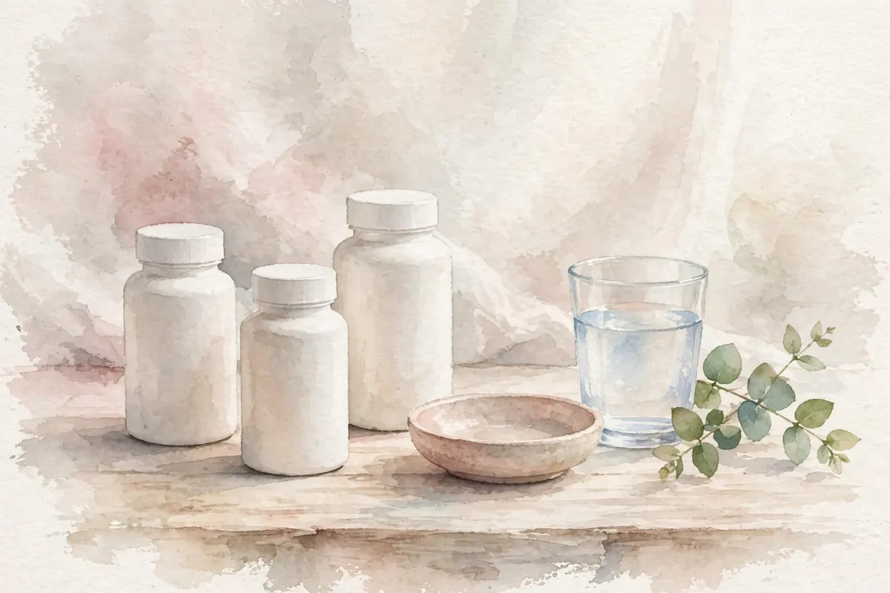

トップ ＞ インナーケア・サプリ ＞ マルチタイプの成分表示の読み方：まとめて書かれた表示の見分け方
マルチタイプの成分表示の読み方：まとめて書かれた表示の見分け方

サプリメントの棚を見ていると、「マルチビタミン」「マルチミネラル」といった、複数の成分をひとつにまとめたタイプをよく見かけます。ひとつの商品でいくつもの成分をまとめて摂れる、という考え方の商品です。この記事では、特定の商品や成分をおすすめするのではなく、マルチタイプの表示の読み方を整理します。
まとめて書かれた表示は、まず区分けして読む
マルチタイプのパッケージ裏には、成分の名前がずらりと並んでいます。まずやるのは、並んでいる名前を「ビタミンの仲間」「ミネラルの仲間」といった具合に、大きく区分けして眺めることです。商品の表に「マルチビタミン」と書かれていれば、ビタミンの仲間が中心で、ミネラルの名前が少し添えられている、という構成のものもあります。区分けして見ることで、その商品の「骨格」が見えてきます。
原材料名の欄では、成分は使用した量の多い順に並ぶ決まりになっています。マルチタイプでは、並びの前の方に何があるかを見ると、量の面での主役が分かります。気になっている成分の名前が、並びの前の方にあるか、後ろの方にあるか。それだけでも、商品ごとの性格の違いが見えてきます。
また、成分名の表記には、同じ成分でも書き方が違うことがあります。「ビタミンC」と「アスコルビン酸」のように、通称と成分名が併記されていることもあります。表記ゆれがあると、別の成分に見えてしまうこともあるので、気になる成分が見つからないときは、別の書き方で探してみるのもひとつの方法です。
含有量の表示と、「1日分」の単位を確認する
マルチタイプでは、成分ごとに「1日分あたり◯mg含有」のように、量が明示されている商品があります。量が書かれている方が、自分の想定と比べやすく、商品同士の比較もしやすくなります。逆に、量の表示がない成分については、その成分がどれくらい入っているのかは、表示からは分かりません。
量の表示を読むときは、単位の前提を確かめることが大切です。「1粒あたり」なのか「1日分あたり」なのかで、数字の意味は大きく変わります。1日分が3粒の商品で「1粒あたり」の数字だけを見て比べると、実際の1日分の量を少なく見積もってしまいます。単位の前提がどこに書かれているか、含有量の表の近くをよく見てください。
栄養成分表示も、あわせて見るポイントです。エネルギー、たんぱく質、脂質、炭水化物、食塩相当量といった基本の項目は、1日分あたり、あるいは100gあたりなど、単位が商品によって違います。比べるときは単位をそろえて見るのが基本です。
ほかのサプリとの重なりを確認する
マルチタイプを使っている人が、別のサプリも併用している場合、同じ成分が重なって入っていることがあります。たとえば、マルチタイプに含まれる成分と、単体のサプリの成分が同じ名前であれば、1日に摂る量の合計が、マルチタイプだけのときより多くなります。併用するときは、それぞれの表示を並べて、同じ成分名がないかを確認する習慣が大切です。
重なりの確認は、原材料名の欄と含有量の表の両方でおこないます。原材料名の欄で名前を見つけたら、含有量の表で量を確かめる、という順番です。表示に「1日の目安量を守る」「多量に摂りすぎない」といった注意書きがある場合は、その案内もあわせて読んでおきます。
マルチタイプは、成分の数が多いぶん、表示の読み方に少し慣れが必要です。まずは区分けして眺め、気になる成分の並びと量を確かめ、ほかのサプリとの重なりを見る、という3つの手順を、買い物のときの型にしてみてください。
サプリメントは食品であり、身体への作用を断定するものではありません。この記事は表示の読み方の案内です。体調に不安がある方、医薬品を服用中の方は、医師・薬剤師等の専門家にご相談ください。
セラフィナ「マルチタイプの表示は、まず区分けして眺めるのがコツだね。並び順と量、重なりもチェックしよう」

セラフィナ｜美容の道具箱の案内役
「量と表示が分かれば、美容は失敗しない。」——セラフィナと白猫のモコが、買う前のチェックポイントを案内します。綺麗になりたい気持ちに正直に、でも表示は冷静に読むのが、このサイトの約束です。